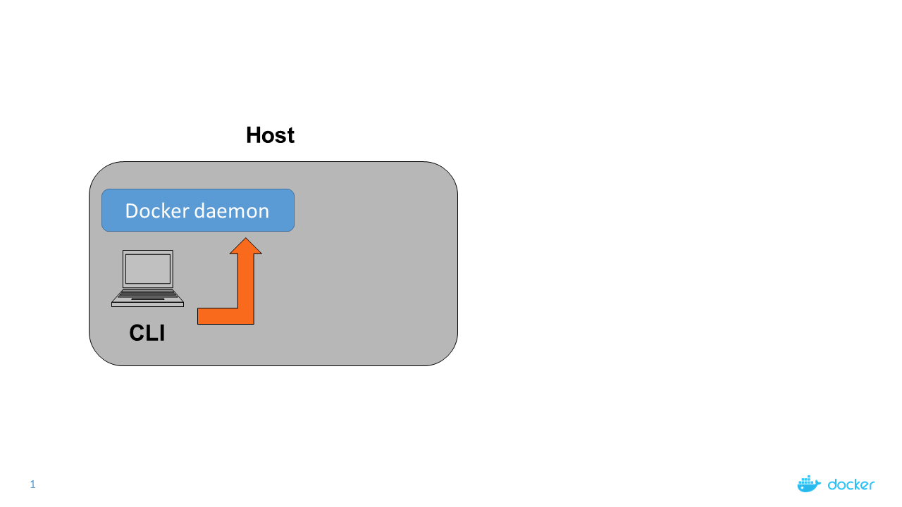
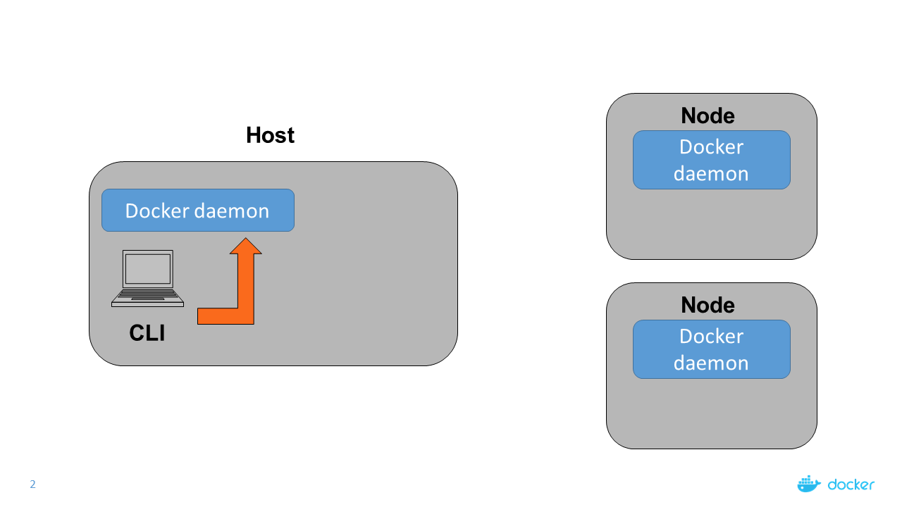
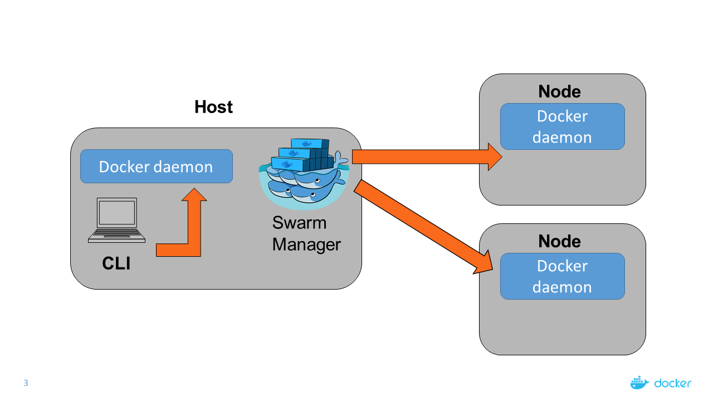
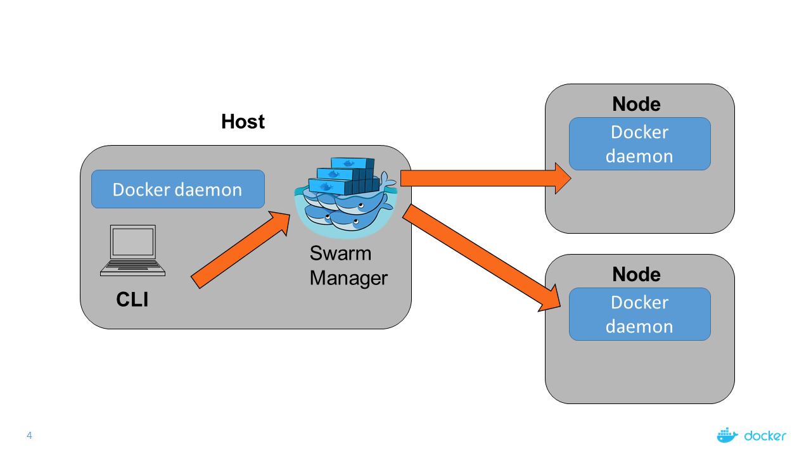

Mini Lecture: Docker Classic Swarm
Mini Lecture: Docker Classic Swarm
What is Classic Swarm
- "Classic Swarm" is our unofficial term for referring to the previous open source Swarm project
- Was Docker's native clustering solution before the introduction of Swarm mode in Engine 1.12
- Tool that clusters Docker hosts and schedules containers on them
- Allows us to distribute container workloads
- Serves the standard Docker API
- Ships with simple scheduling and discovery backend
How Swarm works

How Swarm works (cont'd)

How Swarm works (cont'd)

How Swarm works (cont'd)

Classic Swarm and UCP 2.0
- UCP 2.0 runs on the new Swarm mode in Engine 1.12
- However classic Swarm implementation is still present to provide for backwards compatability
ucp-swarm-manager container is present on all manager nodes in UCP 2.0- Cannot deploy standard Docker containers through the web UI but you can use the Docker CLI via the client bundle
- Can deploy Docker Compose applications via web UI and client bundle
Scheduling containers in the cluster
- How does Swarm decide which node your container runs on?
- The Docker Swarm scheduler ranks nodes based on a number of different strategies / algorithms
- When you run a container, Swarm will place it in the node with the highest rank
- How the rank is calculated depends on your selected strategy
Spread Strategy
- The spread strategy ranks nodes based on the number of containers
- Swarm will schedule the container on the node that has the least number of containers running
- If multiple nodes have the same least number of containers running, Swarm will pick one of those nodes at random
Binpack strategy
- When using the binpack strategy, Swarm will try to fit as many containers into a node as possible, before using another node
- Optimizes for the container that is the most packed
- Swarm will continue to schedule containers on the same node until there are insufficient resources (CPU, RAM) on that node
UCP scheduling
- Defaults to spread strategy
- Option can be configured during the installation procedure
- Cannot be changed on the fly